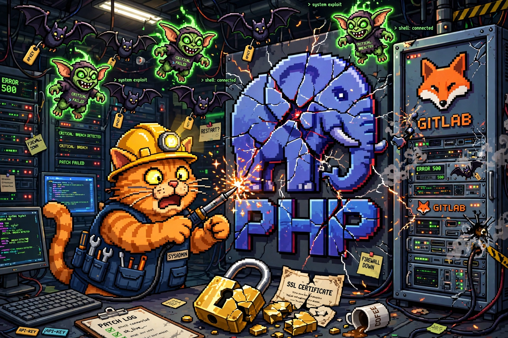

Cyber SOTU: The Week the Web's Plumbing Burst (Oct 18–25, 2026)

The cat is patching the plumbing while the gremlins are already in the pipes. Welcome to Black October's second act.
Welcome back to the Cyber SOTU — the State of Cyber, delivered every Sunday. Six stories from the week that mattered, translated into plain English: what happened, why you should care, and what to do about it. This week's theme: the plumbing — the programming language, the code forge, the AI gateway, and the certificate system that everything else quietly sits on top of. When the plumbing bursts, everybody gets wet.
🐘 PHP2Shell: the language behind much of the web got two 9.2 RCEs — and they leaked before the patch
What happened: On October 21, PHP shipped emergency releases (8.5.12, 8.4.27, 8.3.36, 8.2.35) for CVE-2026-109618 and CVE-2026-109619 — dubbed PHP2Shell — both rated CVSS 9.2 and both allowing unauthenticated remote code execution. The catch: details leaked a day before the fix landed, so attackers had a head start. Amazon's honeypots logged a first attempt as early as October 17, and once proof-of-concept code appeared, attempts on Cloudflare's network surged from thousands to millions by October 23–24 — mostly scanning so far, but millions of knocks is a lot of warning. The blast radius kept widening: Palo Alto Networks confirmed on October 24 that the flaws affect PAN-OS and Panorama management interfaces, with hotfixes dated October 26–30.
Why it matters: PHP powers a huge share of the world's websites, and a pre-patch leak plus a public exploit means the race between patching and scanning is already on. The patch-lag story is now the story: by October 24, reporting had more than 21,000 Danish websites still unpatched, and South Africa's Presidency site went offline as a precaution.
What to do: Upgrade every PHP runtime — including container images and appliances — to the fixed releases and restart PHP-FPM/Apache so workers load the new build. PHP 8.1 and older get no official release, so migrate or use a vendor backport. Where you can't patch yet, apply PHP's interim mitigations, including session.upload_progress.enabled=0. Source: AI Agent Update →
🦊 GitLab's second perfect 10 in ten days — this one reaches back to 2014
What happened: Also on October 21, GitLab shipped fixes for CVE-2026-110264, a CVSS 10.0 unauthenticated remote code execution flaw — its second maximum-severity regex-compiler RCE in ten days, after CVE-2026-97229 on October 12. This one is an integer overflow when the Onigmo regex engine compiles a specially crafted regular expression, reachable by rendering a crafted .org file, and it affects every self-managed release back to 7.0 (2014). The trap: if you patched on October 12, you're still vulnerable — the new fixed versions sit one patch above the old ones. GitLab reports no sign of exploitation so far, and the flaw is not in CISA's KEV catalog.
Why it matters: Your code forge holds the crown jewels — source code, secrets, CI credentials. An unauthenticated RCE there is a skeleton key to everything a company builds. And "I just patched" is not a defense when the second fix supersedes the first.
What to do: Self-managed GitLab users: upgrade to the fixed version for your branch (19.5.1, 19.4.3, 19.3.6, 19.2.9, 19.1.9, 19.0.10, or 18.11.13), internet-facing instances first. GitLab.com already runs the fix. Source: The Hacker News →
🔑 One day, two AI-key heists: poisoned LiteLLM and Railway's secret spill
What happened: On October 21, a malicious LiteLLM 1.107.0 release went up on PyPI and Docker after attackers compromised the project's release pipeline with stolen GitHub tokens. Anyone who installed it got a credential stealer that grabbed browser passwords, cloud keys, SSH keys, and AI provider keys (OpenAI, Anthropic, and others) — plus a backdoor that checked in hourly. PyPI pulled it within hours; the safe version to roll back to is 1.106.2. The same day, hosting platform Railway disclosed that attackers had accessed systems storing customer environment variables — encrypted values, and in some cases decrypted contents — paused all deployments, told every customer to rotate every secret, and asked providers to proactively revoke keys. Its preliminary report estimated up to 100,000 workspaces affected. Railway says it believes its incident is part of a series of attacks on platform companies aimed at AI inference providers; the two incidents have not been publicly confirmed as the same attacker.
Why it matters: AI API keys are close to cash: stolen keys get burned on inference (so-called LLMjacking) or used to distill frontier-model outputs. And the LiteLLM case is the project's second poisoned release this year — floating latest tags meant people who never chose to upgrade got hit in a two-hour window.
What to do: If LiteLLM 1.107.0 ever ran on a host, assume compromise: remove the payload files, rebuild from scratch, pin an exact version or Docker digest, and rotate every secret the host could reach. Railway users: rotate API keys, registry credentials, and all stored secrets, and review logs. Source: Socket → · Source: SecNews →
🎮 Capcom: 11.77 million player accounts accessed, 196 passwords changed
What happened: Capcom disclosed on October 22 that attackers accessed its CAPCOM ID account system, affecting 11,774,247 records worldwide: email addresses plus account-creation time, last-login time, login counts, and last-login IP addresses. For 43 records, dates of birth, gender, country/region, and nicknames were also accessed. Attackers changed the passwords on 196 accounts without authorization (Capcom has reset them); a follow-up on October 23 said 19 of those accounts were used to view e-Capcom store data including names, addresses, phone numbers, and purchase history. No credit card data was involved, and games stayed playable. Capcom spotted the intrusion on October 19 and reported it to police on October 21.
Why it matters: Email + login metadata for 11.77 million gamers is a phishing goldmine — expect convincing "Capcom" emails that know your account details. And the 196 hijacked accounts show the real escalation path: from a big, shallow breach to a small number of fully taken-over accounts.
What to do: If you have a CAPCOM ID: sign in directly (never via an email link), confirm you still control the account, turn on its second login step, and treat any Capcom-branded email with suspicion. Source: Gaming.net →
🏥 Quest Diagnostics: patient records accessed in a lab-services intrusion
What happened: Quest Diagnostics disclosed on October 23 in an SEC filing that unauthorized access hit its Quanum Lab Services Manager system — the platform clients use to place test orders and retrieve results — and that patient health information and identifiable data were involved. The company suspended access to the system on discovering the intrusion, says core operations and patient care were not materially disrupted, and has engaged external experts and notified federal law enforcement. The full scope is still under investigation.
Why it matters: Lab systems sit at the intersection of healthcare data and identity data — exactly the combination that fuels medical identity theft and highly targeted phishing. And it's the latest in a year of attacks on the medical technology sector.
What to do: If you use Quanum or get Quest results through a provider: watch for phishing that references real lab or test details, and monitor explanations of benefits for services you didn't receive. Source: SC Media →
🔏 eMudhra quit the certificate business after its keys turned out to be guessable
What happened: On October 22, Indian trust provider eMudhra announced it is exiting the global SSL/TLS certificate business. Days earlier, a researcher showed that the private keys for eight intermediate certificate authority certificates — generated in April 2025 with insufficient randomness — could be recovered in under a second. Google, Apple, Microsoft, and Mozilla moved to block the affected certificates; eMudhra says it revoked them within 14 hours and that none of them had issued end-entity certificates, so no customer data was breached. The company says the flaw went undetected for 18 months and passed two audit cycles.
Why it matters: A compromised certificate authority can impersonate any website — that's why browsers acted in hours, not weeks. The scarier lesson is the audit gap: two clean audit cycles missed keys that were weak from the moment they were generated. Trust infrastructure fails quietly.
What to do: Update your browsers and operating systems (the browser blocks shipped without a restart for most users). If you run servers or apps with their own trust stores, make sure their certificate lists are updated too — apps that don't get revocation updates may still trust the bad keys. Source: Help Net Security →
Your Sunday homework, courtesy of this week's SOTU:
- PHP: upgrade to 8.5.12 / 8.4.27 / 8.3.36 / 8.2.35 everywhere, restart workers, and set
session.upload_progress.enabled=0where you can't patch yet - GitLab (self-managed): upgrade one patch above the October 12 fix — 19.5.1 / 19.4.3 / 19.3.6 / 19.2.9 / 19.1.9 / 19.0.10 / 18.11.13
- LiteLLM: if 1.107.0 ever ran, assume compromise — rebuild, pin a digest, rotate every reachable secret
- Railway: rotate every stored secret, API key, and registry credential
- CAPCOM ID: sign in directly, confirm control, enable the second login step, ignore emailed "Capcom" links
- Everyone: update browsers and OS trust stores after the eMudhra revocations — and expect phishing armed with real Capcom and Quest details
That's the state of cyber for the week of October 18–25. The theme, if you squint: nobody patches the plumbing until it floods — the language, the forge, the gateway, the certificate authority. This week they all flooded at once. Patch your stuff, rotate your keys, and I'll see you next Sunday. 🐱
Every Sunday at 7 PM ET, right here and on the mckai.net homepage. Past editions live in the blog under the NEWS tag.